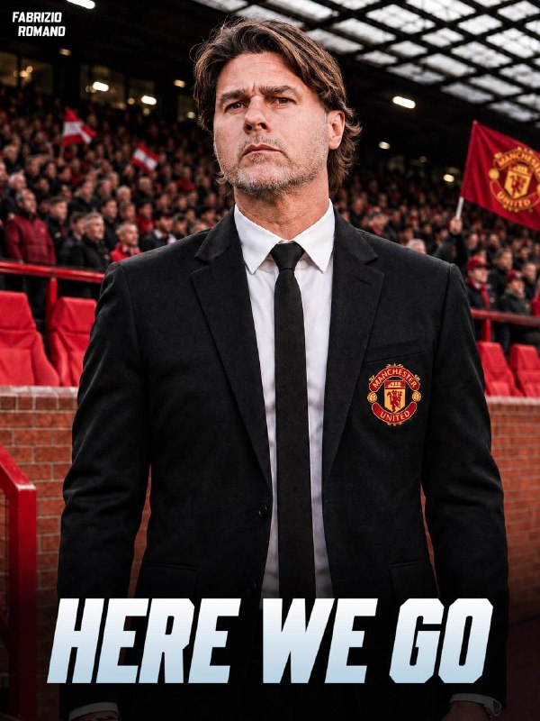
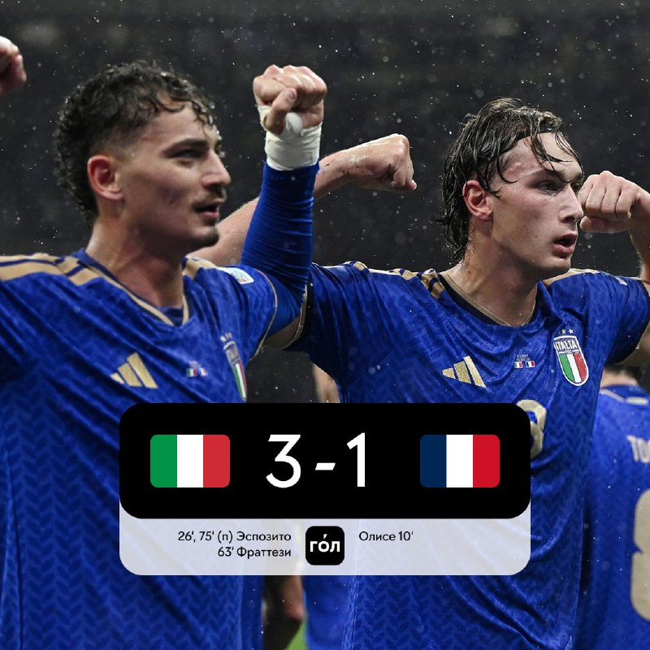
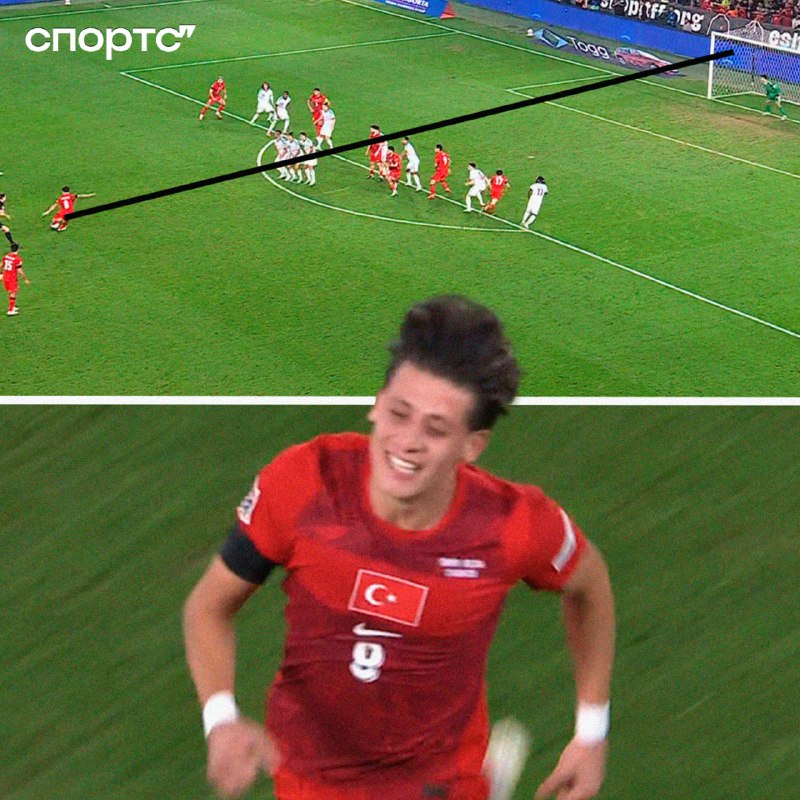
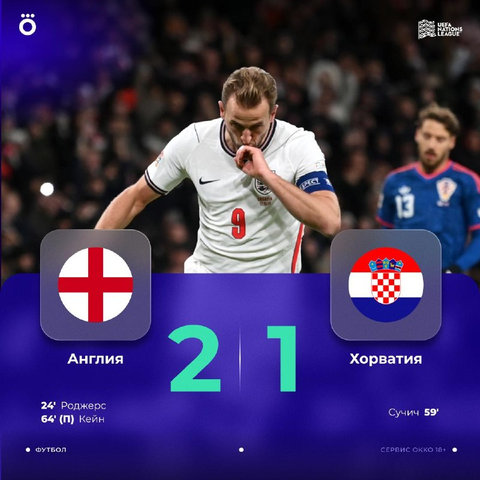

13 ноябряNEW
с 12 по 13 ноября (материалы собраны 13 ноября в 07:08 МСК)
⭐Главное

«Манчестер Юнайтед» назначил Почеттино. Фабрицио Романо: «here we go» — Маурисио Почеттино новый главный тренер «МЮ», сделка закрыта, «зелёный свет» от Федерации футбола США, условия он согласовал ещё в среду. По данным МЯЧ, манкунианцам пришлось заплатить сборной США отступные в 10 млн евро; для аргентинца это четвёртое назначение в клуб АПЛ. Накануне, по Романо, «МЮ» уволил Майкла Каррика. Официального заявления клуба в материалах пока нет.
Италия — Франция 3:1: французы без Мбаппе проиграли в гостях. Олисе открыл счёт на 10-й минуте после ошибки Доннаруммы (пять голов в пяти матчах Лиги наций), но дальше Италия перевернула игру: Пио Эспозито на 26-й и с пенальти на 75-й, Фраттези на 63-й. Первая домашняя победа Италии над Францией с 1962 года и первое поражение сборной Франции при Зидане; итальянцы вышли на первое место в группе. Мбаппе в этом матче не играл — вместо него в центре нападения вышел Дуэ.
⚽Результаты

Турция — Бельгия 1:2. Арда Гюлер открыл счёт на 20-й минуте — «невероятный» гол со штрафного, первый матч турок после увольнения Монтеллы. Но Бельгия быстро перевернула игру: Де Брюйне на 27-й и Де Кетеларе на 30-й. У Турции в Лиге наций пять матчей — пять поражений, разница мячей 3:13. Вратарь бельгийцев Лемменс: «Снимаю шляпу перед Гюлером — можно только поздравить его с голом».- «Реал» с прошлого выпуска не играл — пауза сборных. В расписании ESPN на 7 дней матчей «Реала» нет; дата и время следующей игры уточняются.
- «Зенит» не играл. Следующий матч: 15 ноября, 17:00 МСК, «Зенит» — «Трабзонспор» («Газпром Арена», WINLINE Суперсерия); затем 24 ноября, 19:30 МСК, «Зенит» — «Крылья Советов» (Кубок России). Семак тепло поздравил Хиддинка с юбилеем на английском и поблагодарил за всё, что тот сделал для российского футбола.
- Россия — Узбекистан 3:2 (в Ташкенте). Россия проигрывала 0:2 до 70-й минуты, но за девять минут перевернула игру: дубль Николая Комличенко (первый его гол за сборную с 2019 года; Данилов с дебютным ассистом) и гол Алексея Миранчука — все трое вышли на замену. Мяч на 2:2 — после грубой ошибки вратаря Узбекистана. По МЯЧ, это мог быть худший матч при Карпине: два гола пропущены после ошибок на 0,3 xG.
👤Мои игроки
- КР
- КММбаппе: в матче Италия — Франция не играл (Дуэ вышел в центре нападения). Чемпионат со ссылкой на L’Équipe: Мбаппе и Конате убеждают Олисе перейти в «Реал» — в Мадриде по-прежнему хотят 24-летнего вингера, но «Бавария» не намерена его отпускать и в ближайшие дни начнёт переговоры о продлении контракта на улучшенных условиях. Следующая игра Франции — с Турцией 15 ноября, 22:45 МСК; готовность Килиана в материалах не подтверждена.
- АБ
- —Глушенков, Сафонов, Куртуа, Беллингем, Холанд, Аршавин: новостей в материалах нет.
🔁Трансферы
- ОфициальноСкалони продлил контракт со сборной Аргентины до 2030 года. Вальтер Самуэль покидает штаб сборной Аргентины, чтобы начать карьеру главного тренера (Романо: OFFICIAL).
- СлухиПочеттино — «МЮ»: Романо «here we go», но объявления клуба ещё нет (см. «Главное»). Олисе — «Реал»: интерес Мадрида, по L’Équipe через Чемпионат, «Бавария» хочет продлить контракт. «Ювентус» сохраняет интерес к вратарю Агкацеву (Tuttosport через Sports.ru), но первый вариант — Пальмизани из «Фрозиноне».
🩹Травмы
- ФранцияНовых травм ключевых игроков в материалах нет. Мбаппе пропустил матч с Италией (дискомфорт в бедре, по прошлому выпуску), статус на игру с Турцией — уточняется.
🔥Ещё важное

Кейн — рекордсмен сборной Англии. Гарри Кейн вышел в старте против Хорватии на 126-й матч за сборную, обойдя Питера Шилтона, — и забил победный гол с пенальти (64'). Англия — Хорватия 2:1: Роджерс (24'), Сучич (59'). Победитель группы Лиги наций определится в очном матче Испания — Англия 15 ноября.- Испания продолжает давить в группе. Чехия — Испания 0:2 (Баена с пенальти, Пубилль на 90+6'), хозяева не нанесли ни одного удара в створ, капитана Чехии Крейчи снова удалили. У Испании 15 очков, у Англии 12; испанцы обошлись без Ямаля.
📅Ближайшие матчи
- 15ноя«Зенит» — «Трабзонспор»Товарищеский (WINLINE Суперсерия) · «Газпром Арена», 17:00 МСК
- 24ноя«Зенит» — «Крылья Советов»Кубок России · 19:30 МСК
- ?—«Реал»дата и время ближайшего матча уточняются
- 20ноя«Аль-Ахли» — «Аль-Наср» (Роналду)Чемпионат Саудовской Аравии · 20:30 МСК
- Лига наций, 13 ноября: Сербия — Германия, Нидерланды — Греция, Шотландия — Северная Македония (22:45 МСК); Молдавия — Казахстан (20:00 МСК).
- Лига наций, 14 ноября: Норвегия — Уэльс (20:00 МСК); Португалия — Дания, Швеция — Босния и Герцеговина (22:45 МСК).
- Лига наций, 15 ноября: Испания — Англия, Бельгия — Италия, Франция — Турция (22:45 МСК).
- Лига наций, 16–17 ноября: 16-го: Германия — Нидерланды (22:45 МСК); 17-го: Уэльс — Португалия, Дания — Норвегия (22:45 МСК).